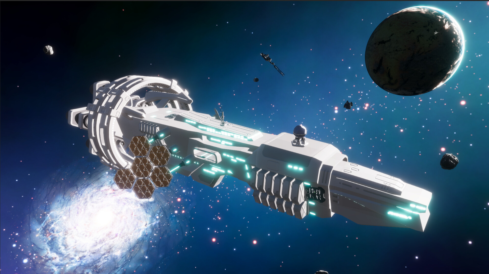

Quantum Derelict
Quantum Derelict is a resource management roguelite game by Ravenwood Interactive (part of Max Gaming Studios). It involves using drones to gather resources for ship maintainence and physical health. Assisted with QA and Steam Deck testing.
Steam